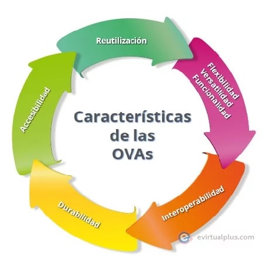
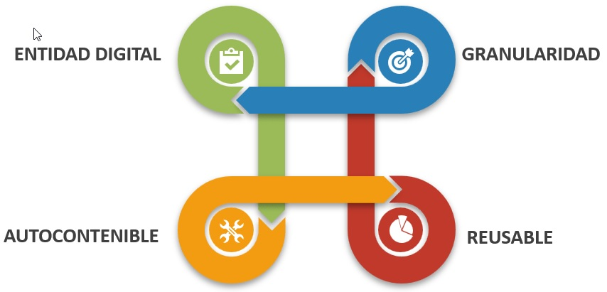

Dentro de su metodología utilizan las TIC, como complemento para los procesos de enseñanza en entornos de aprendizaje mediados por estas tecnologías.Reutilizables: a partir de un OVA existente, puede modificarse o crearse uno nuevo, mejorando su contenido o utilizarlo en otros contextos.Compatibles: su compatibilidad con otros estándares sin inconvenientes técnicos al utilizarlos.Estructurados: con una interfaz fácil de utilizar y explorar por el usuario, contando con un diseño atractivo.Temporales: no pierden vigencia en el tiempo ni en los contextos que se utilizan.